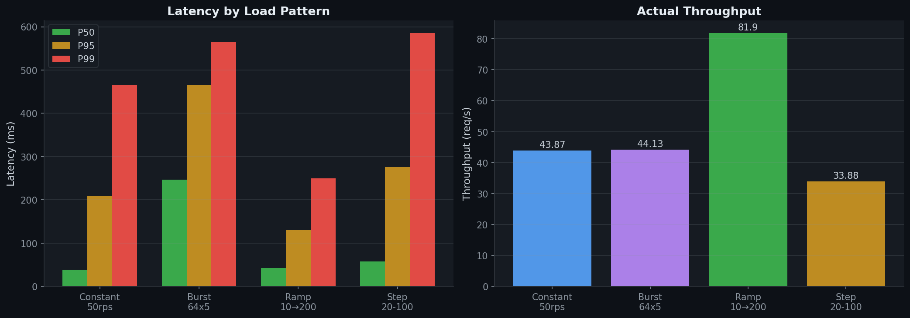
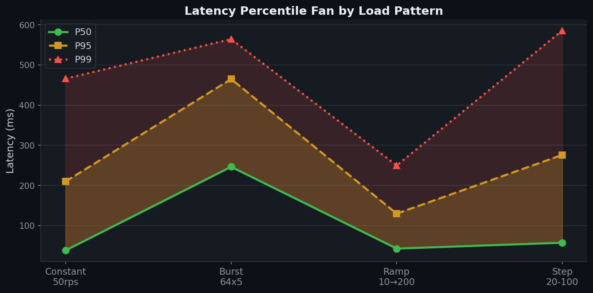
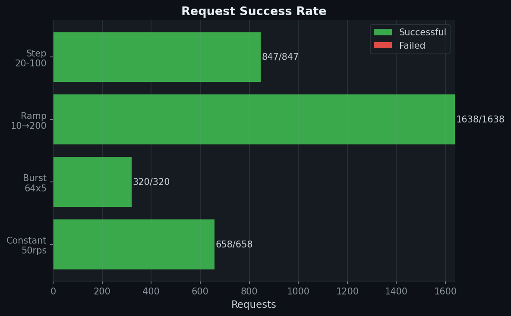

A high-concurrency inference serving system that uses asynchronous request queueing and dynamic batching to maximize throughput while preserving low tail latency.
Naive inference serving — one request in, one forward pass out — wastes compute. Accelerators perform dramatically better on batched workloads. But batching means waiting, and waiting means latency.
Under bursty traffic, an inference system must balance hardware utilization against responsiveness. Batch too aggressively and P99 latency spikes. Batch too conservatively and the hardware sits idle. DBIE implements the queueing, scheduling, and execution machinery to explore this tradeoff directly.
DBIE is a four-stage producer-consumer pipeline. HTTP handlers produce requests. A scheduler forms batches. A runner executes inference. Futures return results.
One request, from HTTP ingress through batched inference and back.
asyncio.Future for result delivery.
put_nowait() into bounded queue. Full queue = HTTP
429. Never blocks.
torch.stack() combines payloads. Shape mismatch
resolves all futures with error.
run_in_executor() moves blocking inference to a
thread. Event loop stays free.
outputs[i] delivered via
call_soon_threadsafe() to each request's future.
The scheduler answers one question: when should I stop waiting and flush the current batch?
Handlers use put_nowait() and return 429 on overflow.
Blocking on a full queue would stall the event loop and freeze all
in-flight requests.
PyTorch forward passes are synchronous and CPU-bound.
run_in_executor() moves them to a thread so the event
loop can continue accepting requests.
Multiple threads cause OpenMP/MKL over-subscription. A single worker avoids context switching overhead and gets cleaner throughput.
Future.set_result() from an executor thread is unsafe
in Python 3.10+. call_soon_threadsafe() schedules
resolution on the event loop thread.
Multiple uvicorn workers split traffic across independent queues and models, destroying batching efficiency. DBIE runs one worker by design.
asyncio.wait_for() bounds how long a handler waits.
Prevents memory leaks from disconnected clients whose futures
would never be read.
| Issue | Mitigation |
|---|---|
| Queue overflow | Immediate 429 via non-blocking put. Never stalls the event loop. |
| Tensor shape mismatch |
torch.stack wrapped in try/except. All futures in
the batch receive the error.
|
| Client disconnect | Configurable timeout on future await prevents orphaned memory. |
| Cold-start latency | Warm-up batches run before the server accepts traffic. |
| Scheduler oscillation | Hysteresis requires N consecutive signals before changing batch size. |
| Docker health during warmup |
start_period: 30s prevents kill-restart loops.
|
| GPU memory fragmentation |
torch.cuda.empty_cache() called every 100 batches.
|
Single-process FastAPI on uvicorn. Environment-variable-driven configuration. Multi-stage Docker builds for CPU and GPU variants.
# CPU
python -m dbie
# GPU
INFERENCE_DEVICE=cuda:0 python -m dbie
# Adaptive scheduler
SCHEDULER_STRATEGY=adaptive MAX_WAIT_MS=30 python -m dbie
# Docker
docker compose up inference-cpu| Variable | Default |
|---|---|
| MAX_BATCH_SIZE | 32 |
| MAX_WAIT_MS | 50 |
| QUEUE_MAX_SIZE | 1000 |
| INFERENCE_DEVICE | cpu |
| SCHEDULER_STRATEGY | fifo |
| ADAPTIVE_TARGET_LATENCY_MS | 100 |
| WARMUP_BATCHES | 10 |
Open-loop load testing across four traffic patterns. FIFO scheduler, MAX_BATCH_SIZE=32, MAX_WAIT_MS=50, CPU execution.

Left: P50/P95/P99 latency across load patterns. Right: Achieved throughput. Burst traffic shows highest latencies as the scheduler absorbs spikes into large batches. Ramp achieves highest throughput as gradual load increase fills batches efficiently.

The fan between P50 and P99 widens under burst and step-function traffic — exactly where the batching tradeoff is most visible.

100% success rate across all patterns (3,463 requests, zero failures). Backpressure (HTTP 429) was not triggered — queue capacity of 1000 was sufficient.
DBIE demonstrates engineering at the intersection of backend systems and ML infrastructure.
Producer-consumer pipeline with futures, executors, and event loop isolation.
Bounded queues, backpressure, two scheduling strategies with different throughput-latency profiles.
Batching, warm-up, device management, and practical constraints of serving models.
Health checks, timeouts, memory management, graceful shutdown, observability.
The same problem space as NVIDIA Triton Inference Server, TensorFlow Serving, and vLLM's scheduling layer.